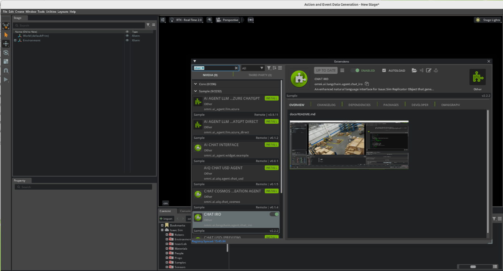
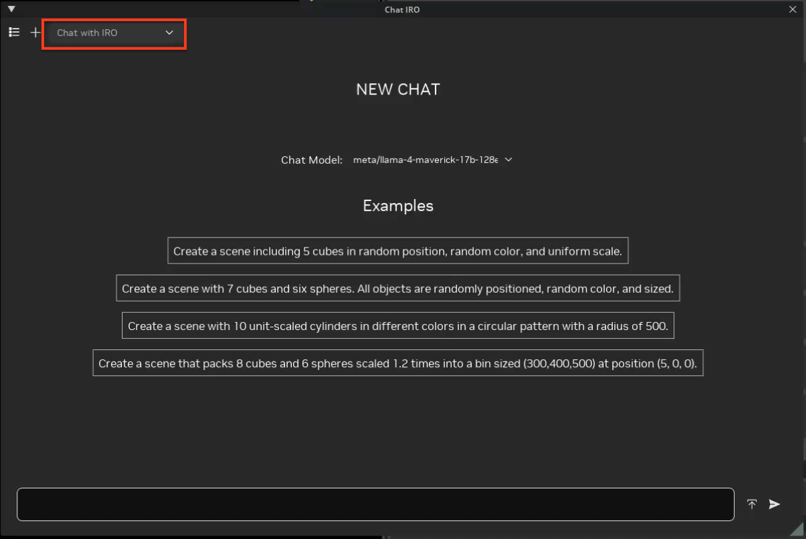
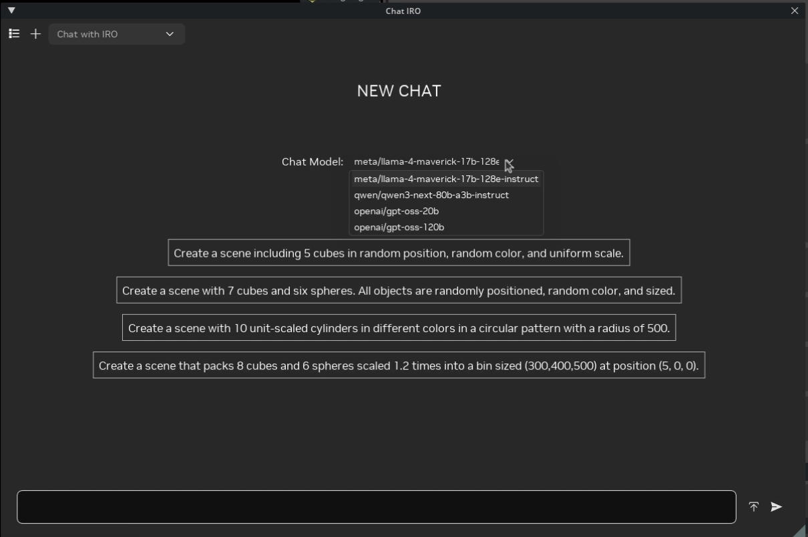
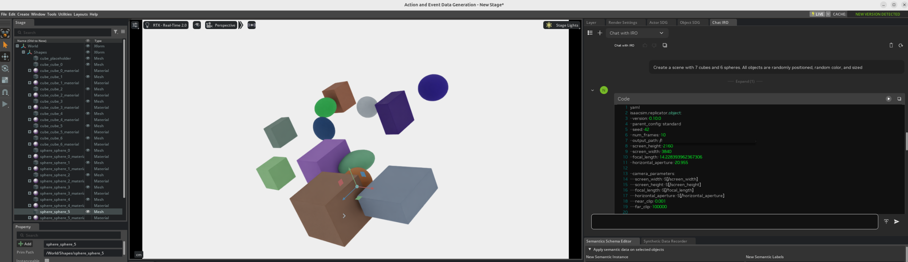

Chat IRO：Isaac Sim Replicator Object 的自然语言接口#
视觉语言模型和场景生成工作流通常要求用户为 Isaacsim.replicator.object (IRO) 手写 YAML 配置文件。 对于复杂的布局、协调器、物理设置和相机装置而言，这一过程容易出错且效率低下。
Chat IRO 是一个自然语言接口，可将纯英文描述转换为可执行的 IRO YAML 配置，并直接在 Isaac Sim 中运行。它构建于 IRO 扩展之上，自动化配置编写、验证和执行流程。
Chat IRO 具有以下功能：
将英文描述转换为 IRO YAML 场景。
使用检索增强生成 (RAG) 系统，该系统基于捆绑的 IRO 示例配置建立索引，以提高正确性并复用最佳实践。
在执行前验证生成的 YAML 语法及常见的结构问题。
在 Isaac Sim 视口中立即预览生成的场景。
保存并重新加载配置文件，以支持迭代式工作流。
在捆绑的 NVIDIA 托管模型上运行，或将 Chat IRO 指向您控制的任何兼容 OpenAI 的端点。
工作流程#
Chat IRO 使用以下工作流来生成场景：
您在 Chat IRO 窗口中输入自然语言请求，例如
Create a scene with 10 random size and color cubes。该扩展会可选地查询其现有 IRO YAML 文件的 RAG 索引，并将相关示例注入到 LLM 上下文中。
LLM 为
isaacsim.replicator.object生成候选 YAML 配置。Chat IRO 验证 YAML，修复常见问题，并通过 IRO 执行它来创建或更新场景。
生成的合成场景会在视口中渲染。您可以通过发送后续提示来迭代优化配置。
先决条件#
在使用 Chat IRO 之前，请确保满足以下要求：
已启用
isaacsim.replicator.object.ui扩展受支持的操作系统（Linux 是主要平台；Windows 处于实验阶段）。
支持 CUDA 的 NVIDIA GPU（推荐）。
至少 8 GB 的 RAM（对于大型场景，建议 16 GB 或更多）。
已启用
omni.ai.langchain.agent.chat_iro扩展。用于 LLM 访问的有效 NVIDIA API 密钥。
注意
LLM 功能需要有效的 NVIDIA API 密钥和足够的积分。请访问 NVIDIA API 门户 以获取密钥并管理积分。有关更多详细信息，请参阅 NVIDIA API 参考页面。
注意
聊天模型和 RAG 嵌入模型分别进行身份验证。如果您将捆绑模型替换为 自定义端点，则该端点使用其自己的凭据，但检索仍然需要 NVIDIA 密钥，因为嵌入模型由 NVIDIA 托管。如果没有该密钥，Chat IRO 仍然会生成 YAML，只是没有检索到的示例。
启用 Chat IRO 扩展#
请按照 Omniverse Extension Manager 指南 启用
omni.ai.langchain.agent.chat_iro扩展。启动 Isaac Sim，如果 Extension Manager 尚未打开，请将其打开：
在主菜单中，选择 Window > Extensions。
搜索
Chat IRO。启用该扩展，并可选择启用 AUTOLOAD，以便在后续启动时自动加载。

通过将 NVIDIA API 密钥设置为环境变量来进行配置。
Linux/macOS
# Set API key for the current shell session export NVIDIA_API_KEY="nvapi-YOUR-KEY-HERE" # Make the setting persistent (for bash) echo 'export NVIDIA_API_KEY="nvapi-YOUR-KEY-HERE"' >> ~/.bashrc source ~/.bashrc
Windows (命令提示符)
REM Set API key for the current Command Prompt session set NVIDIA_API_KEY=nvapi-YOUR-KEY-HERE REM To make the setting persistent, add the variable in REM System Properties > Environment Variables.
注意
如果 LLM 身份验证失败，请验证 NVIDIA_API_KEY 是否已设置
且仍有剩余额度。
Isaac Sim 从其启动时所在的环境中读取该变量，因此在终端中导出密钥 对已运行的会话没有影响。请先导出密钥，然后从同一 shell 启动 Isaac Sim，或者 将导出命令添加到你的 shell 启动文件中。
extension.toml 中的 nvidia_api_key 条目包含一个占位符
值，Chat IRO 会特意将其视为“未设置”。保持其不变是安全的，并且建议优先使用环境变量，而不是编辑该文件。
访问 Chat IRO 面板#
启用扩展后：
打开 Chat IRO 主窗口：
从菜单栏中，选择 Window > Chat IRO。
将打开一个可停靠的 Chat IRO 面板，通常位于视口的右侧。

从 Model 下拉菜单中选择一个模型。Chat IRO 附带一个捆绑模型，该模型已预设为默认选项：
nvidia/nemotron-3.5-lightning-30b-a3b（1M 上下文，禁用推理）

捆绑列表有意仅包含一个条目。Nemotron 3 Nano 和 Super、DeepSeek V4 Flash、Gemma 4 31B IT 以及两种 GPT-OSS 尺寸均经过评估并被移除，因为它们的回答为纯文本，不包含可提取的 YAML。因此生成器未产生任何输出。若要运行其他模型，请将其添加为自定义端点，以便您控制请求并验证结果。请参阅 使用您自己的模型端点。
选择模型后，请检查 Chat IRO 面板中的状态行。如果未看到错误，则模型已就绪且扩展已通过身份验证。
使用您自己的模型端点#
捆绑模型由 NVIDIA 托管，但 Chat IRO 并不局限于此。任何兼容 OpenAI 的 /v1 端点都可以添加到模型下拉菜单中，这涵盖了 OpenAI、Gemini、Anthropic、OpenRouter 和 Azure，以及 Ollama、vLLM 和 LM Studio 等本地服务器。自托管的 NIM 可以改用 api_format = "nvidia"。
推荐的方法是使用您拥有的 JSON 文件，这样它在扩展升级后仍然有效。Chat IRO 默认读取 ~/.chat_iro/custom_models.json：
{
"models": [
{
"name": "gpt-4o",
"model": "gpt-4o",
"base_url": "https://api.openai.com/v1",
"api_key_env": "OPENAI_API_KEY",
"max_input_tokens": 128000
},
{
"name": "local-ollama",
"model": "qwen3-coder:30b",
"base_url": "http://localhost:11434/v1",
"max_input_tokens": 256000
}
]
}
导出引用的密钥，然后重启 Isaac Sim：
export OPENAI_API_KEY=sk-...
对于单个端点，您可以完全跳过文件，仅使用环境变量：
export CHAT_IRO_CUSTOM_MODEL_NAME="my-gpt"
export CHAT_IRO_CUSTOM_MODEL_BASE_URL="https://api.openai.com/v1"
export CHAT_IRO_CUSTOM_MODEL_MODEL="gpt-4o"
export CHAT_IRO_CUSTOM_MODEL_API_KEY_ENV="OPENAI_API_KEY"
端点也可以在 extension.toml 中内联声明：
[[settings.exts."omni.ai.langchain.agent.chat_iro".custom_models]]
name = "gemini-2.5-pro"
model = "gemini-2.5-pro"
base_url = "https://generativelanguage.googleapis.com/v1beta/openai/"
api_key_env = "GEMINI_API_KEY"
max_input_tokens = 1000000
这三个来源会被合并，后出现的来源优先级更高：首先是 extension.toml 表，然后是 JSON 文件（custom_models_file 或 CHAT_IRO_CUSTOM_MODELS_FILE），最后是 CHAT_IRO_CUSTOM_MODEL_* 变量。
请注意以下几点：
仅
name和base_url是必填项。model默认为name。优先使用
api_key_env而不是内联的api_key，这样凭据就不会出现在配置文件中。max_input_tokens是向 Chat IRO 通告的上下文窗口大小。固定提示词加上检索到的 YAML 大约需要 32k，因此不要低于此值。自定义条目在捆绑模型之前注册，因此复用捆绑名称会将其重定向到您自己的主机。
没有可解析密钥的端点会收到一个占位符，这仅适用于忽略身份验证的本地服务器。
嵌入模型的 API 密钥#
嵌入始终由 NVIDIA 托管（nvidia/nemotron-3-embed-1b），因此即使聊天运行在 OpenAI、Gemini 或本地服务器上，检索也需要一个 NVIDIA 密钥。默认情况下，密钥从 NVIDIA_API_KEY 读取。如果您的密钥位于不同的变量名下，请指定该变量名：
[settings.exts."omni.ai.langchain.agent.chat_iro"]
embedding_api_key_env = "MY_TEAM_NVIDIA_KEY"
等效的环境变量覆盖是 CHAT_IRO_EMBEDDING_API_KEY_ENV。
配置中仅包含变量名称；密钥本身保留在环境中。指定变量名被视为有意行为，因此如果最终发现该变量未设置，Chat IRO 不会静默回退到 NVIDIA_API_KEY。相反，它会记录检索已禁用以及它查找的变量名。日志中会指明来源，但绝不会显示值。
使用 Chat IRO#
Chat IRO 可以通过以下方式使用：
使用 UI 面板#
要使用 Chat IRO 面板创建和预览场景：
在 Chat IRO 输入框中，输入如下提示词：
Create a scene with 7 cubes and 6 spheres. All objects are randomly positioned, random color, and sized.
按 Enter 发送提示词。
Chat IRO 从其 RAG 索引中检索相关的 YAML 模式，生成 IRO 配置，对其进行验证，并在 Isaac Sim 中执行。
检查视口以验证生成的场景是否符合请求的行为（对象数量、颜色、位置、光照和相机放置）。

使用修改现有配置的后续提示词来优化场景。例如：
Make all cubes blue and add rigidbody physics
该扩展程序会就地更新 YAML 配置，重新应用配置，并刷新视口。
默认情况下，配置文件会自动存储在类似以下的目录中：
~/Documents/ChatIRO_Results/config_files/my_scene.yaml您也可以通过要求 Chat IRO 将文件保存到不同位置来指定自定义路径。
生成新的 IRO 场景#
Chat IRO 针对从简洁且规范明确的提示词生成完整的 IRO 场景进行了优化。优质的提示词包括：
Create 20 purple cubes arranged in a circular formation with radius 900 at Y = 50.Pack 8 cubes and 6 spheres scaled 1.2x into a bin sized (300, 400, 500) at (5, 0, 0).
例如，以下提示词：
Create a scene with 7 cubes and 6 spheres. All objects are randomly positioned,
random color, and sized.
通常会产生类似于以下的 IRO 配置：
isaacsim.replicator.object:
version: 0.11.15
parent_config: standard
seed: 42
num_frames: 10
output_path: /Documents/ChatIRO_Results
screen_height: 2160
screen_width: 3840
focal_length: 14.228393962367306
horizontal_aperture: 20.955
camera_parameters:
screen_width: $[/screen_width]
screen_height: $[/screen_height]
focal_length: $[/focal_length]
horizontal_aperture: $[/horizontal_aperture]
near_clip: 0.001
far_clip: 100000
cube:
count: 7
type: geometry
subtype: cube
tracked: true
color:
distribution_type: range
start:
- 0
- 0
- 0
end:
- 1
- 1
- 1
transform_operators:
- rotateX: 0
- rotateY: 0
- rotateZ: 0
- translate:
distribution_type: range
start:
- -500
- 50
- -500
end:
- 500
- 50
- 500
- scale:
distribution_type: range
start:
- 0.5
- 0.5
- 0.5
end:
- 1.5
- 1.5
- 1.5
sphere:
count: 6
type: geometry
subtype: sphere
tracked: true
color:
distribution_type: range
start:
- 0
- 0
- 0
end:
- 1
- 1
- 1
transform_operators:
- rotateX: 0
- rotateY: 0
- rotateZ: 0
- translate:
distribution_type: range
start:
- -500
- 50
- -500
end:
- 500
- 50
- 500
- scale:
distribution_type: range
start:
- 0.5
- 0.5
- 0.5
end:
- 1.5
- 1.5
- 1.5
default_camera:
camera_parameters: $[/camera_parameters]
transform_operators:
- rotateX: -30
- rotateY: 45
- rotateZ: 0
- translate:
- 0
- 0
- 1000
- scale:
- 1
- 1
- 1
type: camera
dome_light:
intensity: 1500
subtype: dome
transform_operators:
- rotateX: 270
type: light
注意
version 字段不需要您手动跟踪。Chat IRO 会自动将其标记为与实际安装的 isaacsim.replicator.object 扩展相匹配，从而确保生成的配置在 IRO 升级后仍可加载。上面显示的值即为该版本对应的值。
更多提示词示例#
使用以下提示词来探索更丰富的场景：
装箱问题
Create a scene that packs 8 spheres and 10 cubes scaled 1.2 times
into a bin sized (300, 400, 500) at position (5, 0, 0)
网格布局
Create 25 cubes arranged in a 5x5 grid with spacing of 100 units
物理模拟
Create 20 spheres with rigidbody physics falling from height 500
onto a ground plane
金字塔堆叠
Stack 15 cubes of size 50 into a pyramid centered at the origin
施加力
Create a sphere at the origin and apply an upward thrust force of 5000
for 2 seconds of simulation
逐对象物理材质
Create 6 cubes in a row on a ground plane, give each a different friction
coefficient, and launch them all with the same initial velocity along X
物理场景由模拟步骤驱动，因此需要 enable_physics_simulation = true。摩擦系数、恢复系数和初始速度等逐对象属性设置在对象本身，而施加力还需要足够长的模拟持续时间，以便运动得以发展。
由协调器（harmonizer）定位的对象采用与协调器返回类型相匹配的变换算子：
bin_pack返回 4x4 矩阵，因此需要transform:。pyramid返回 3 维向量，因此使用translate:。pitch的local_aabb用于测量加载网格的边界框，因此仅适用于网格。图元需要显式的数值间距。
注意
复杂的数学布局（例如圆形或基于网格的排列）可能需要几次迭代。如果对象放置不符合预期，请使用仅专注于修正公式或间距的后续提示词。
使用现有 USD 场景#
你也可以在提示词中引用现有的 USD 阶段或资产：
创建一个仓库阶段
Create a warehouse environment with the following settings:
WAREHOUSE:
USD: /home/user/Assets/warehouse.usd
Apply collision physics.
Scale the warehouse to 100 times its original size.
Rotate the warehouse -90 degrees on the X-axis.
CAMERA:
Position randomly between 1800-2000 units away on Z-axis.
Rotate randomly -180 to 180 degrees on Y-axis.
Tilt -30 degrees on X-axis for overhead view.
Set the number of frames to 30.
注意
引用现有 USD 阶段或资产的提示词要求这些 USD 文件 （及其依赖项）在本地可用。Chat IRO 会将阶段 和资产加载到场景中，以便在生成的 YAML 配置中引用它们。上述示例中显示的配置选项 仅为说明性示例；你可以使用 IRO 扩展支持的任何其他设置。
编辑现有 IRO YAML 文件#
Chat IRO 还可以加载并修改你手动 或使用其他工具创建的 YAML 配置文件。
典型工作流程：
要求 Chat IRO 加载文件：
load /home/user/Documents/ChatIRO_Results/config_files/my_scene.yaml
在视口中检查生成的场景。
使用自然语言应用编辑，例如：
Add 5 more cubes with random colors. Increase dome light intensity to 3000. Add a rotating camera that orbits the scene 360 degrees.
保存更新后的配置：
save /absolute/path/to/my_scene_v2.yaml
在后台，Chat IRO 复用与新生成配置相同的验证和执行流水线。
管理输出文件和目录#
默认情况下，Chat IRO 将生成的配置文件和仿真 输出保存到你主目录下的结构化目录中。
默认输出位置#
所有 Chat IRO 输出均组织在：
~/Documents/ChatIRO_Results/
├── config_files/ # YAML configuration files
├── simulation_results/ # IRO simulation outputs
└── .cache/ # Temporary files (hidden)
config_files/目录包含定义场景的 YAML 文件。simulation_results/目录包含执行 YAML 配置时生成的渲染图像、传感器数据和其他输出。.cache/目录存储临时处理文件。
注意
如果 ~/Documents/ChatIRO_Results/ 不存在，Chat IRO 会在首次使用时自动创建它。
更改输出目录#
您可以通过环境变量更改默认输出目录：
# Linux/macOS
export CHAT_IRO_OUTPUT_DIR="~/MyProjects/IRO_Results"
# To make it persistent, add to your shell startup file, for example:
echo 'export CHAT_IRO_OUTPUT_DIR="~/MyProjects/IRO_Results"' >> ~/.bashrc
source ~/.bashrc
REM Windows (Command Prompt)
set CHAT_IRO_OUTPUT_DIR=C:\Users\YourName\IRO_Results
REM Add to System Environment Variables for persistence
注意
高级用户还可以在 Chat IRO 扩展设置中或通过扩展附带的 Python API 配置默认输出目录。
自然语言文件命令#
Chat IRO 支持用于加载、保存和运行配置的简单文本命令：
加载文件
load /path/to/my_scene.yaml
保存文件
save /absolute/path/to/my_warehouse_scene.yaml
save this as /absolute/path/to/production_config.yaml
使用特定参数进行仿真
simulate with seed 123
注意
为了确保行为可靠，保存时请始终指定绝对路径，例如：save /absolute/path/to/my_scene.yaml。不建议仅使用文件名（例如，save my_scene.yaml），因为保存位置可能会因环境和配置而异。
Chat IRO RAG 配置#
Chat IRO 包含一个检索增强生成系统，可提供对现有 IRO 场景和最佳实践配置的深入知识。
索引随扩展一起提供并从磁盘加载。它包含 426 个向量，涵盖 63 个示例 YAML 配置，并使用 nvidia/nemotron-3-embed-1b 进行嵌入。运行时不会下载任何内容。
可以在 extension.toml 中自定义 RAG 系统的行为：
[settings.exts."omni.ai.langchain.agent.chat_iro"]
enable_rag_system = true # Enable/disable RAG (default: true)
rag_context_mode = "targeted" # "targeted" (default) or "full_legacy"
rag_yaml_top_k = 2 # Complete YAML files to inject
rag_yaml_max_tokens = 6000 # Token budget for retrieved YAML
rag_rules_max_tokens = 8000 # Token budget for rule slices
rag_expand_to_parent_file = true # Expand chunk hits to the whole file
# Optional multi‑query decomposition and cross‑encoder reranking
enable_multi_query_rag = false
max_sub_queries = 3
enable_rag_reranking = false
reranker_model = "BAAI/bge-reranker-large"
在默认的 targeted 模式下，为每个提示词组装的上下文包括一个小型常驻核心、根据请求意图从规则中选取的片段，以及一个或两个 完整 的示例配置。检索作用于整个索引，其行为如下：
匹配文件部分的片段会被扩展为整个文件，因此模型看到的是连贯且可运行的配置，而非碎片。
结构无法满足请求的示例会被模式（schema）过滤掉。对于原语（primitives）的请求，不会显示依赖于
usd_path或subtype: mesh的网格（mesh）示例，反之亦然。上述令牌预算限制了排序后注入的内容。
将 rag_context_mode = "full_legacy" 设置为 true 以恢复之前的行为，即在每次请求时都注入技术文档和示例 markdown。仅当生成质量下降时才值得尝试此设置。
注意
启用交叉编码器重排序（cross-encoder reranking）通常可将检索准确率提高 10–30%，但会增加延迟（每个请求约 100–200 毫秒）。对于简单提示词或低延迟环境，请保持 enable_rag_reranking = false 设置。
注意
索引存储的是构建时示例文本的嵌入向量，因此在重建索引之前，编辑或添加示例不会产生任何影响。重建索引是一项开发任务，需要嵌入密钥，并且必须在 Isaac Sim 自身的解释器下运行；扩展程序的 README 文档中记录了具体步骤。
最佳实践#
Chat IRO 依赖于解释自然语言的大语言模型（LLM）。清晰、具体的提示词能带来更可靠的 IRO 配置。
推荐的提示词指南：
指定具体数值，而非模糊术语。
良好：
Create 20 cubes in a circular formation with radius 900 at Y = 50.避免：
Create some objects in a circle.明确描述尺寸、位置和物理要求。
迭代构建场景，并在视口中验证每个步骤。
频繁保存工作配置，并在优化过程中进行版本控制。
如果生成的 YAML 无法执行或场景显示为空：
要求 Chat IRO 使用修正后的结构重新生成，例如：
Regenerate the configuration using valid YAML syntax and complete all missing parameters.
将修正提示词聚焦于具体错误（间距、旋转、数量、物理标志），而不是重写整个场景。
当模型出错时#
Chat IRO 使用 LLM 生成其配置，因此相同的提示词并不总是产生相同的 YAML。模型可能会悄悄遗漏请求中的某个子句，在你要求变化的地方只应用一次某个值，将答案包裹在被告知应省略的 markdown 中，或者（罕见地）陷入重复相同片段直到耗尽 token。这些情况都不意味着扩展程序配置错误，也不需要重启。它们是生成式模型的正常特性，补救措施几乎总是再次提示。
将以下内容视为升级阶梯，一旦场景正确即停止。每一步的成本都高于前一步。
使用后续提示词进行修正#
留在同一会话中，仅指出错误之处。模型上下文中仍保留着刚刚生成的 YAML，因此简短的修正通常就足够了，并且能保留所有已经正确的内容。
如果某个子句被忽略，例如当你要求随机颜色时，每个立方体都获得了相同的颜色：
Give each cube its own randomly generated color. Do not reuse one shared
color for all of them.
如果回复中包含解释或 Markdown 格式而非配置：
Return only the IRO YAML configuration. No explanation, no commentary, and
no markdown code fences.
如果某个属性错误但场景其余部分良好，请明确指出， 以便模型进行编辑而非重新生成：
Keep the current positions and scales. Only change the rotations so each
cube is rotated randomly about Z.
完整重述请求#
如果两到三次后续追问仍未收敛，对话本身可能正在 引导模型重复其先前的错误。将原始请求作为单个自包含提示词重新发送， 并以具体术语而非修正方式陈述遗漏的要求：
Create 5 cubes at random positions within a 500-unit cube, each with an
independently randomized color, all at uniform scale 100.
开始新会话#
当输出不再仅仅是错误，而是变得不连贯时，请重置： 例如重复或循环文本、无关场景的片段，或忽略你最近几条消息的回答。 此时上下文正在对你不利，进一步的后续追问往往会使其更糟。 使用 会话管理 中描述的 \(+\) 按钮， 并以单个、完全指定的提示词开始。
长会话漂移的原因相同。如果你已经在一个场景上迭代了一段时间， 以当前 YAML 作为起点粘贴并重新开始，通常比继续修正它更快。
将场景拆分为多个阶段#
复杂场景比简单场景更容易失败，而且其失败方式也更难纠正。请分阶段构建场景（先构建对象，再添加物理效果，最后设置摄像机和光照），并在添加下一阶段之前，在视口中验证每个阶段。如果模型无法可靠地处理一个大型提示词，那么将同一场景拆分为三个较小的提示词通常能使其正确处理。这也有助于确保每次回复都远低于响应长度限制，这一点很重要，因为中途被截断的 YAML 配置无法解析。
尝试使用不同的模型#
如果某个特定需求在多个新会话和改写后的提示词中反复失败，那么捆绑的模型可能本身就不擅长处理该需求。Chat IRO 并不局限于其自带的模型：请按照使用您自己的模型端点中所述，添加任何兼容 OpenAI 的端点，并从Model下拉菜单中选择它。 建议优先选择遵循指令的模型，因为 Chat IRO 需要提取一个 YAML 块，而不是对话式回答。
注意
重复性是区分模型错误与值得报告的缺陷的关键。对于通常能正常工作的提示词，偶尔出现的错误输出属于模型方差，上述排查阶梯即为解决方案。如果在新的会话、改写后的提示词以及理想情况下使用第二个模型时，输出每次都以相同的方式出错，则这是一个可复现的 bug。在提交报告之前，请捕获提示词、生成的 YAML 以及会话日志。
故障排除#
常见问题及解决方法：
LLM 身份验证失败
症状：出现关于 API 密钥缺失或无效的报错信息；未生成 YAML。
操作：
确认您的账户仍有剩余额度。
验证
NVIDIA_API_KEY是否已在 启动 Isaac Sim 的环境中设置。在另一个终端中导出该变量无法传递给正在运行的会话，这是当密钥看起来正确时出现此错误的最常见原因。请注意，
extension.toml中的占位符nvidia_api_key被视为未设置，因此仅替换它并不能解决问题。如果聊天运行在自定义端点上，请检查该端点的
api_key_env所指定的变量。
未渲染任何场景
症状：Chat IRO 有响应，但视口保持空白。
操作：
检查 Chat IRO 窗口中生成的 YAML。
在 Isaac Sim 控制台或日志中查找错误消息。
尝试使用简单的提示词（如
Create 5 cubes）以验证基本行为。
模型以散文形式回答，且未构建任何内容
症状：回复流畅并解释了场景，但没有 YAML 代码块，视口中也没有任何变化。
操作：Chat IRO 只能执行它能从回复中提取出的 YAML 代码块。当模型以对话方式回答时，没有可执行的内容。这就是为什么仅捆绑了一个模型。如果您添加了 自定义端点，请优先选择遵循指令的模型，并重新表述提示词，明确要求仅返回完整的 IRO YAML 配置，不包含其他内容。
检索到的示例与请求不匹配
症状：生成的配置从无关的场景中借用结构，例如针对关于图元的请求却使用了基于网格的示例。
操作：在提示词中明确指定对象类型。检索功能会根据架构筛选示例，因此说明“立方体和球体”或“USD 网格”可以引导检索方向。请验证嵌入键是否可用，因为如果没有嵌入键，检索会被静默跳过，导致模型仅依赖预设提示词。
请求的部分内容被忽略
症状：场景已构建且未报告错误，但提示词中的某一条款未被应用。例如，当提示词要求随机颜色时，所有对象却获得了相同的颜色，而位置确实发生了变化。
操作：发送一个后续提示，仅指定该要求，例如
Give each cube its own randomly generated color.模型会保留配置的其余部分。如果后续提示无效，请参阅 When the Model Gets It Wrong 以了解可以尝试的其他方法。
YAML 语法错误
症状：出现诸如
Failed to parse YAML的消息，当回复以 markdown 代码围栏开头时，还会包含found character '`' that cannot start any token。操作：
要求 Chat IRO 修复 YAML 语法，或仅返回配置内容而不包含 markdown 围栏。
简化提示词，并确保请求单个、自包含的配置。如果回复超出模型的响应长度限制，配置会在中途被截断且无法解析，这在大型场景中更有可能发生。
回复重复或文本循环
症状：响应中包含重复的相同片段直到停止，且解析该内容时失败。
操作：开始新会话，而不是发送后续消息；退化响应在上下文中通常会持续存在。使用单个、完全指定的提示词重新打开，如果同一请求再次出现此问题，请尝试使用 When the Model Gets It Wrong 中描述的其他模型。
响应缓慢
症状：发送提示词与接收答案之间存在明显延迟。
操作：
减少
rag_yaml_top_k，降低rag_yaml_max_tokens，并在extension.toml中保持禁用重排序和多查询分解。将非常复杂的场景拆分为多个较小的提示词。
会话管理#
在非常长的会话中，LLM 可能会偏离原始约束或生成不一致的配置。
当单个回复错误时，重置并不是首先要尝试的操作。有针对性的后续提示词通常可以在保留场景其余部分的同时修复该问题，而 When the Model Gets It Wrong 涵盖了何时纠正与何时重置的情况。当输出变得不连贯或对话已长到足以发生漂移时，开始新会话。
要重置对话：
点击 Chat IRO 窗口左上角的 \(+\) 按钮以开始新会话。
如果行为仍然不一致，可选择重启 Isaac Sim。
以清晰的指令开始新会话，例如：
You are a YAML configuration generator for Isaac Sim Replicator Object. Generate only valid YAML with proper structure. Create a scene with 10 cubes in a grid layout.